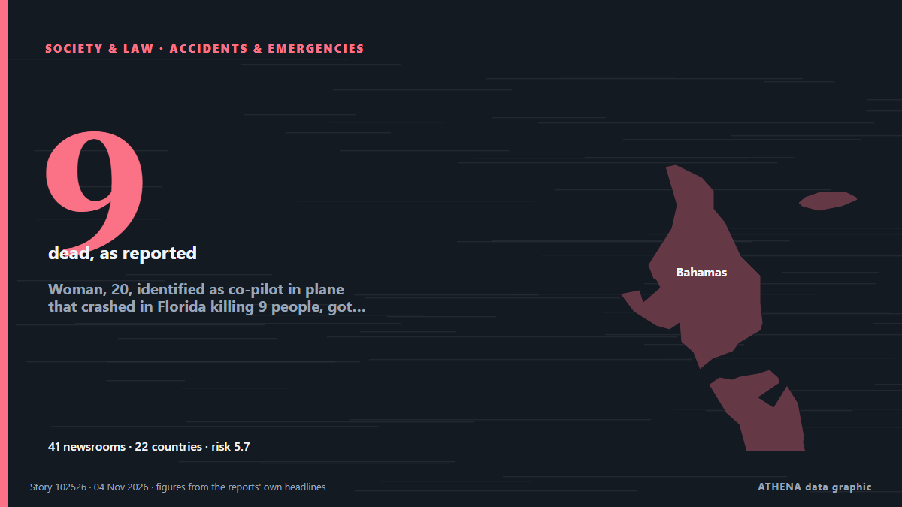

Woman, 20, identified as co-pilot in plane that crashed in Florida killing 9 people, got her pilot's licence in high school

Family of four, two close friends and nanny also died in crash as pilot identified as 55-year-old Jeff Gregory Family members on Monday identified a young Florida pilot as one of nine victims of a… из The Guardian
Независимые источники: 41 издание в 22 странах, с 2 нояб.; первым сообщил Khaama Press; освещение идёт на спад. ATHENA оценивает риск как повышенный (5.7/10), прежде всего из-за тяжести описываемого ущерба и географического и отраслевого охвата. Уверенность — 88 % (высокая); подтверждают независимые источники: 41 издание, средняя надёжность источников — 73 %. СМИ по странам: Великобритания (9), Соединенные Штаты (6), Ирландия (4). Освещение: с 2 нояб. по 3 нояб., 21 ч.
Почему это важно: Правовые и политические изменения меняют права, обязанности и государственные услуги для затронутых людей.
Что изменилось: 18 новых сообщений от 16 редакций за 24 часа до 4 нояб..
Первый заголовок: Investigators search for cause in Florida plane crash that killed all nine onboard
Заголовки приводятся на английском языке, как они были опубликованы.
Коротко в цифрах
Отобрано, оценено и написано по опубликованной методологии ATHENA. Ни один редактор не вмешивается в отдельные события. Как это создаётся ›
| 02 Nov 07:06 UTC | 1 |
|---|---|
| 02 Nov 09:06 UTC | 0 |
| 02 Nov 11:06 UTC | 0 |
| 02 Nov 13:06 UTC | 1 |
| 02 Nov 15:06 UTC | 7 |
| 02 Nov 17:06 UTC | 4 |
| 02 Nov 19:06 UTC | 7 |
| 02 Nov 21:06 UTC | 10 |
| 02 Nov 23:06 UTC | 6 |
| 03 Nov 01:06 UTC | 4 |
| 03 Nov 03:06 UTC | 6 |
| 03 Nov 05:06 UTC | 1 |
| 03 Nov 07:06 UTC | 1 |
| 03 Nov 09:06 UTC | 1 |
| 03 Nov 11:06 UTC | 2 |
| 03 Nov 13:06 UTC | 1 |
| 03 Nov 15:06 UTC | 1 |
| 03 Nov 17:06 UTC | 1 |
| 03 Nov 19:06 UTC | 3 |
| 03 Nov 21:06 UTC | 4 |
| 03 Nov 23:06 UTC | 2 |
| 04 Nov 01:06 UTC | 0 |
| 04 Nov 03:06 UTC | 1 |
| 04 Nov 05:06 UTC | 0 |
| 04 Nov 07:06 UTC | 1 |
| 04 Nov 09:06 UTC | 1 |
| 04 Nov 11:06 UTC | 1 |
| 02 Nov 15:27 UTC | 3.9 |
|---|---|
| 02 Nov 17:04 UTC | 4.5 |
| 02 Nov 23:52 UTC | 6.3 |
| 03 Nov 01:05 UTC | 5.6 |
| 04 Nov 00:47 UTC | 6.3 |
| 04 Nov 06:33 UTC | 5.8 |
| 04 Nov 11:18 UTC | 5.7 |
Откуда эти цифры
Значимость
Риск
Уверенность
Освещение — кто сообщил и когда
заголовок в оригинале · открывает источник- Khaama Press · АфганистанNine Killed in Florida Business Jet Crash
- The Guardian · ВеликобританияYoung co-pilot, 20, named as one of nine victims of deadly Florida plane crash
- France 24 English · ФранцияNine dead in small plane crash near Trump's Florida home
- Chronicle Live (Newcastle) · ВеликобританияLearjet co-pilot, 20, named after fatal Florida crash with chilling final 'we're out of time' message
- ProtoThema English ·‘I can’t drive, but I can fly’: Tragic story of 20-year-old co-pilot killed in Florida plane crash
- The Independent · Великобритания20-year-old woman was part of team piloting plane that slammed into Florida street killing 9
- CBC News (alternative feed) · КанадаCouple, 2 children and a 20-year-old pilot among 9 dead in Florida crash
- Irish Mirror · ИрландияFlorida plane crash: Family named co-pilot, 20, after chilling final words heard on distress call
- Anadolu Agency (English) · ТурцияPilot who got license in high school co-piloted plane that crashed in Florida: Report
- Manchester Evening News · ВеликобританияLearjet co-pilot heard screaming 'We're out of time' before fatal Florida crash named
- The Canadian Press (via CityNews) · КанадаVictims of Florida plane crash include a 20-year-old who got her pilot’s license as a teen
- Irish Mirror · ИрландияPlane co-pilot sent chilling six-word text to boyfriend minutes before fatal crash
- Chronicle Live (Newcastle) · ВеликобританияFlorida co-pilot's chilling text to boyfriend minutes before tragic plane crash
- ABC News Australia · АвстралияParts of jet appear to have broken off before fatal Florida crash
- Courthouse News · Соединенные ШтатыEvidence indicates parts of jet broke off before Florida crash that killed 9, investigators say
- Sydney Morning Herald · АвстралияCo-pilot identified in deadly US plane crash
- PBS NewsHour · Соединенные ШтатыParts of a Learjet may have broken off midair before Florida crash that killed 9, investigators say
- BBC News · ВеликобританияWhat Florida jet audio and flight data tells us about its final moments
- The Hill · Соединенные ШтатыWoman identifies daughter, 20, as one of the pilots on jet that crashed in Florida
- Irish Mirror · ИрландияFlorida horror plane crash kills 'married couple and two toddlers' with co-pilot, 20
- Livemint · ИндияLearjet May Have Broken Up Before Fatal Florida Crash, NTSB Says
- Manchester Evening News · ВеликобританияTwo toddlers and multi-millionaire parents named as Florida Learjet crash victims
- Chronicle Live (Newcastle) · ВеликобританияFlorida plane crash victims named as couple and children among nine Learjet 60 dead
- Al Jazeera English · Катар‘Work to do’: Authorities give update on Florida private jet crash
- Forbes Business · Соединенные Штаты20-Year-Old Co-Pilot Died In Florida Learjet Crash That Killed 9, Family Says
- Business Insider · Соединенные ШтатыNASA administrator tells the internet to stop criticizing copilot of crashed Learjet 60
- Sydney Morning Herald · АвстралияFlorida jet crash passengers and co-pilot identified as investigators hunt for clues
- The Independent · ВеликобританияTech entrepreneur, wife, kids and friends among victims in Florida plane crash
- MyJoyOnline · ГанаCopilot in deadly Florida jet crash identified in reports as 20-year-old
- Stuff · Новая ЗеландияAll victims in horror Learjet crash identified
- New Straits Times · МалайзияWeather, Mayday call key to probe into Florida Learjet crash that killed nine
- Free Malaysia Today · МалайзияBad weather a ‘major’ focus of Florida plane crash probe
- PBS NewsHour · Соединенные ШтатыNews Wrap: Parts of jet may have broken off before crash in Florida
- CNA (Channel NewsAsia) · СингапурInvestigators say Learjet may have broken up before crashing in Florida
- RTÉ News · ИрландияBad weather a 'major' focus of Florida plane crash probe
- Gulf News · ОАЭVictims of Florida plane crash include a 20-year-old copilot, tech entrepreneur and his family
- NDTV · ИндияProbe Finds Learjet Parts Broke Up Before Florida Jet Crash
- Livemint · ИндияFlorida Learjet crash victims identified: 20-year-old copilot, tech entrepreneur and his family among those killed
- NDTV · ИндияLearjet Co-pilot Who Called 'Mayday' Before Florida Crash Was 20
- Daily Mirror · Шри-ЛанкаWho are the victims of the deadly Florida jet crash?